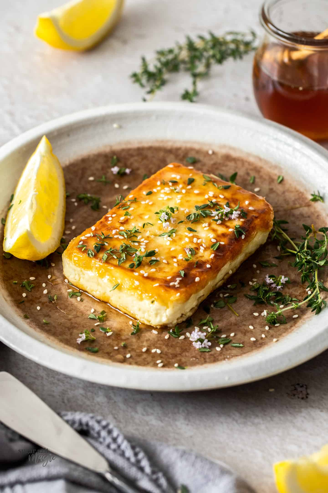

saganaki

Description
Saganaki is a Greek appetizer made with fried kasseri cheese. The ritual of adding brandy and flambéing the cheese was started by restaurateurs in Chicago, who encouraged customers to yell "Opa!" as the plate was being ignited.
You can recreate the tradition at home in minutes, whether you'd like to spark up a little romance with an old flame on date night or just try a fast and fun cheese dish on a chilly weeknight. Serve with sliced fresh or grilled bread.
Ingredients
- 1 (4 ounce) package kasseri cheese
- 1 tablespoon water, or as needed
- ¼ cup all-purpose flour, or as needed
- 1 tablespoon olive oil
- 2 tablespoons brandy, at room temperature
- ½ lemon, or to taste
- 1 tablespoon freshly chopped Italian parsley
Steps
- Brush each side of kasseri cheese with water; dredge both sides in flour, making sure the surface is completely covered.
- Preheat a well-seasoned cast iron skillet on medium-high heat until smoking; pour in olive oil. Carefully place floured cheese in hot oil and cook until cheese begins to ooze and a golden-brown crust forms, about 2 minutes. Quickly flip cheese over with a spat>
- Remove from the heat and place skillet onto a napkin-lined plate. Pour brandy into the skillet over the cheese. Light the brandy using a fireplace lighter. Squeeze some lemon juice on top to extinguish the last few flames and garnish with parsley.